Count down to the gate closing, not the departure
Both travelers put leave-by time first, and departure isn't when you have to stop. So the Flight tab leads with one line: 5h 25m before Gate 105 closes.
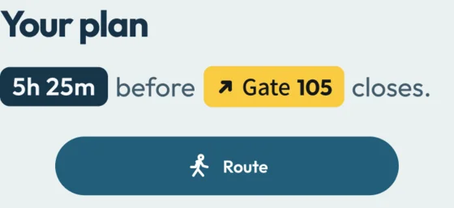
a UX case study
Flight apps tell you when your plane leaves. AirBorder tells you how much free time you have before your gate closes, and what fits in it.
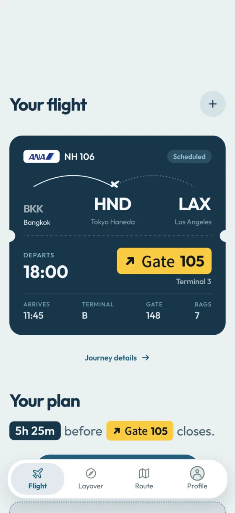
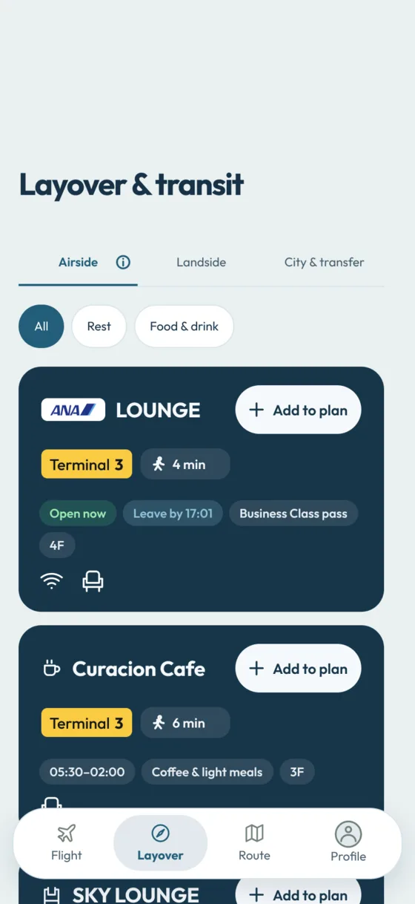
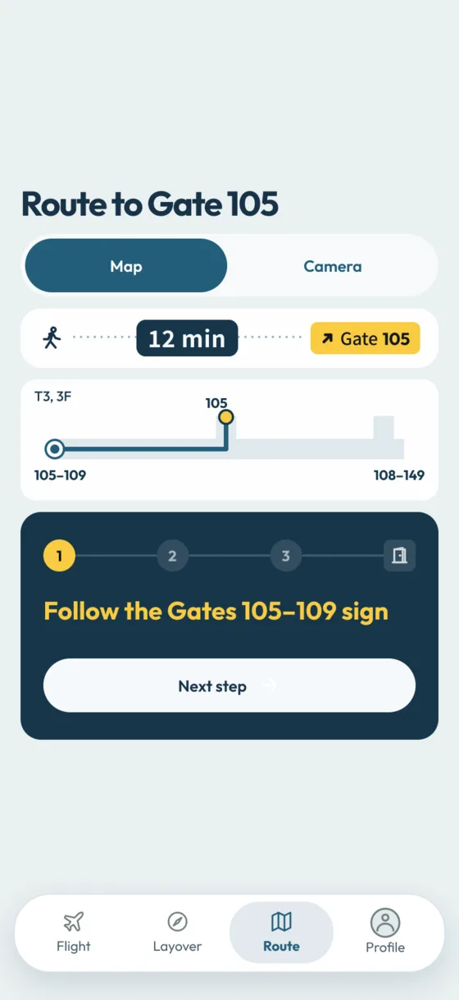
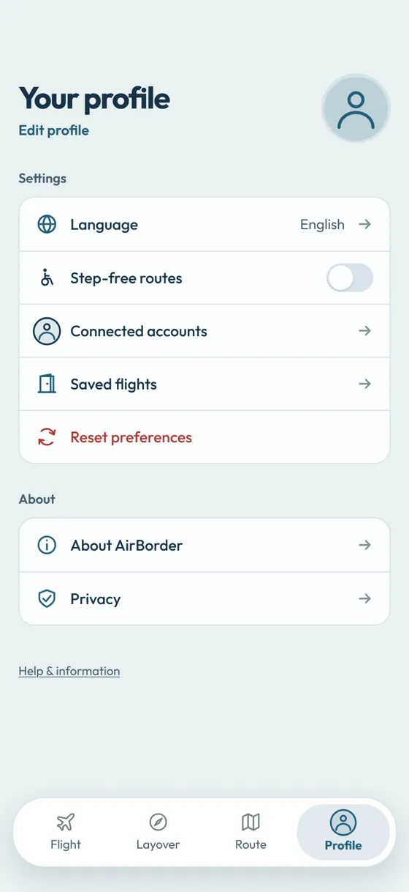
On a layover, the deadline that matters is when the gate closes. Between you and it sit a walk, maybe security or a border check, and flight information that can change while you're sitting down. Travelers juggle all of it to answer one question: what can I do next, and when do I have to leave?
Plans do break. In 2024, 21.9% of scheduled U.S. domestic flights didn't arrive on time, counting cancellations and diversions.¹ Both travelers we interviewed described lost rest, missed commitments or extra costs.
Estimates each step of a connection (deplaning, immigration, baggage, security, the walk) and updates as things change. It's our closest comparison.
Knowing a route takes 12 minutes doesn't tell you whether to cut lunch short. AirBorder ties the activity you picked to the steps still ahead, and says which one broke the plan.
Our research question
How can an interface make the next feasible action clear when time, access and information change together?
We aren't claiming AirBorder beats Flighty; a matched-task comparison is part of our planned evaluation. TripIt Pro and Fly Delta were also references.
Our team built a branching questionnaire with interactive interface tasks, so we saw what people clicked as well as what they told us. Both participants were 18–24 computer science students with 3–5 flights in the past two years. R1 prefers map guidance; R2 prefers the camera.
Two near-identical participants is a narrow sample. These findings are hypotheses to test, not conclusions.
Both rated expanding the map as very easy, yet neither used the map control first; both reached for the camera. After a gate change, R2 couldn't find the route to the new gate:
“miss the map directing to new gate”
So route actions are always visible, and we test whether people find a control separately from how easy they say it was.
Both picked “What changed and when” after an update. So a change shows the old value struck through next to the new one, on every tab.
R1 wanted the map, R2 the camera, and both wanted the app to remember. So both modes are always available, and the app keeps your choice.
R1 lost rest; R2 also lost money and commitments. So recovery guidance covers practical support, not just new times.
Both also used ChatGPT alongside flight apps. R2 found it very helpful, but said its advice was sometimes outdated and hard to move into a plan.
I wrote this table for our report. Each row links something we heard to what we designed and how we'll test it.
| What we heard | What we designed | What we'll test |
|---|---|---|
| Both: leave-by time, routes and what changed come first | A next action that stays on screen, with a record of what changed | Can they tell when to leave, and why? |
| R1 map-first; R2 camera-first | A remembered view, with visible controls for both | Can they expand the map and find a changed route? |
| R1 lost activity time; R2 has work and rest commitments | Editable activity length and time to get back | Can they change an activity and still make the deadline? |
| R2: outdated chatbot advice, effort moving it into a plan | Show when information was last updated; keep one shared plan | Can they check advice and carry on without re-entering it? |
| Both: free or included access; disruption hit them differently | Costs shown up front; separate recovery steps | Can they find affordable facilities and the right support? |
Both travelers put leave-by time first, and departure isn't when you have to stop. So the Flight tab leads with one line: 5h 25m before Gate 105 closes.

The math behind it
M = D − t − R − T
Picking a place is easy; knowing when to walk away isn't. R1 lost activity time, and R2 works and rests on layovers.
Place cards show walk time, hours and a leave-by time (17:01 for the lounge). Added plans become a timeline on the Flight tab that you can edit or remove.
A gate change adds a yellow banner and strikes through the old gate. When boarding is at risk, the banner and countdown turn red, with the numbers that matter (gate closes in 15 min, walk 12 min) and a way to call the airline.
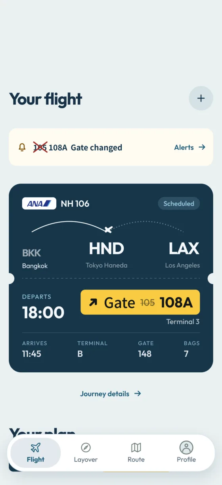
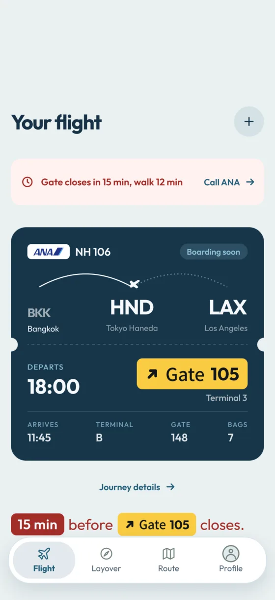
Our strongest finding: people said the map was easy but didn't find it. So the Route tab opens straight to the route: walk time, a floor diagram and one step at a time. After a gate change, the banner follows you here.
Map and camera share one switch. Camera mode reads Japanese and English signs, and offers “Read sign again” when it can't.
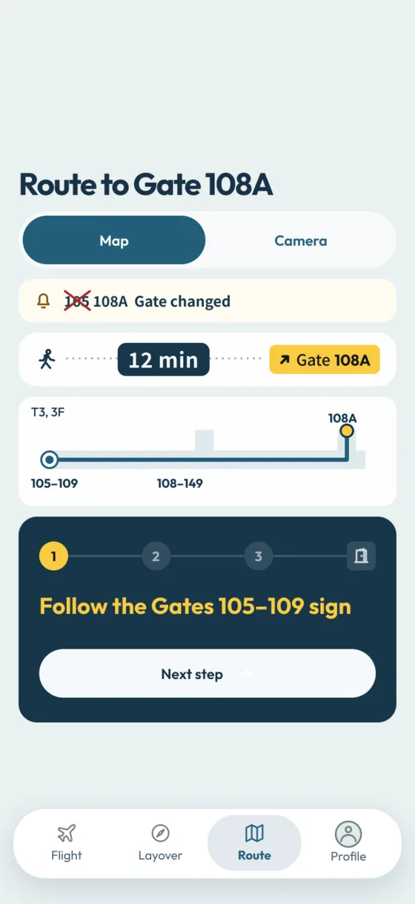
Picking a place, getting there and getting back, against one deadline.
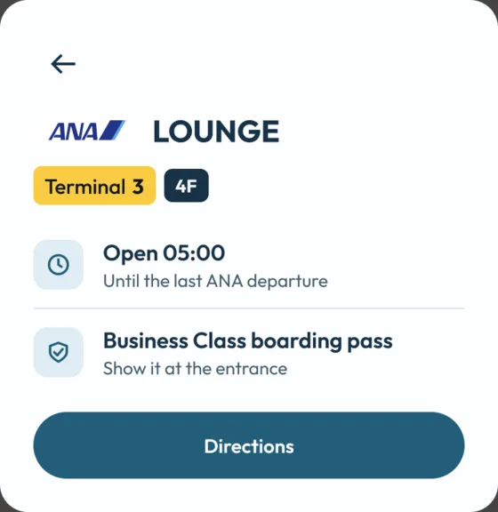
1 Hours and entry rules come first.
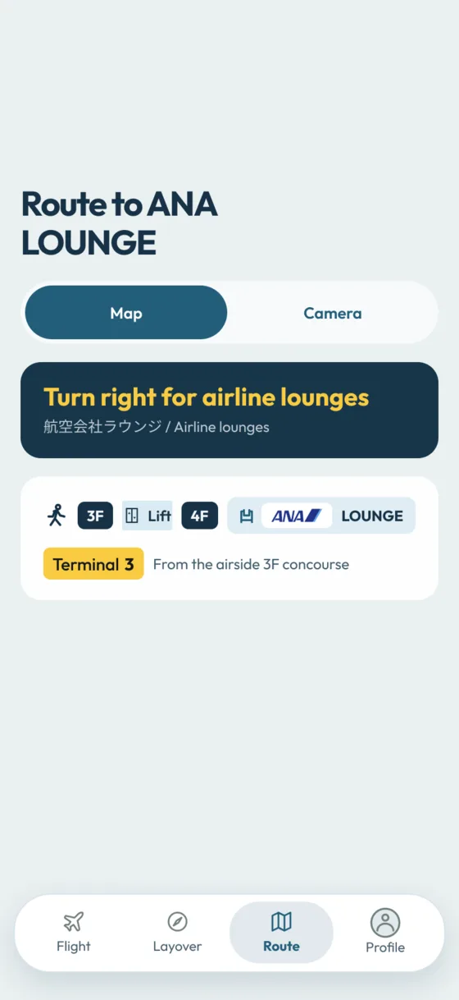
2 The floor change is spelled out, with signs in Japanese and English.
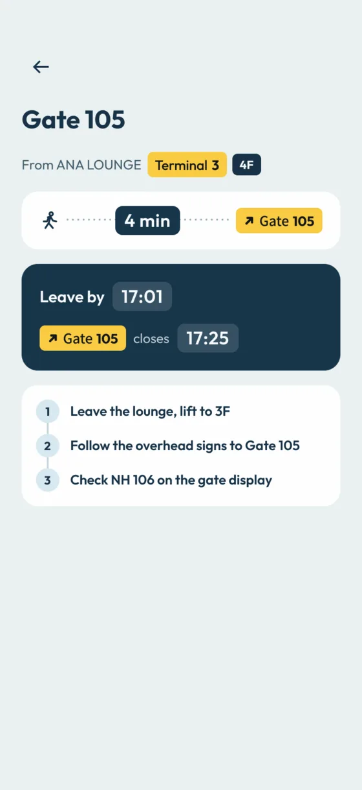
3 The way back uses the plan's leave-by time: 17:01 for a 17:25 close.
One flight, as the countdown tightens.
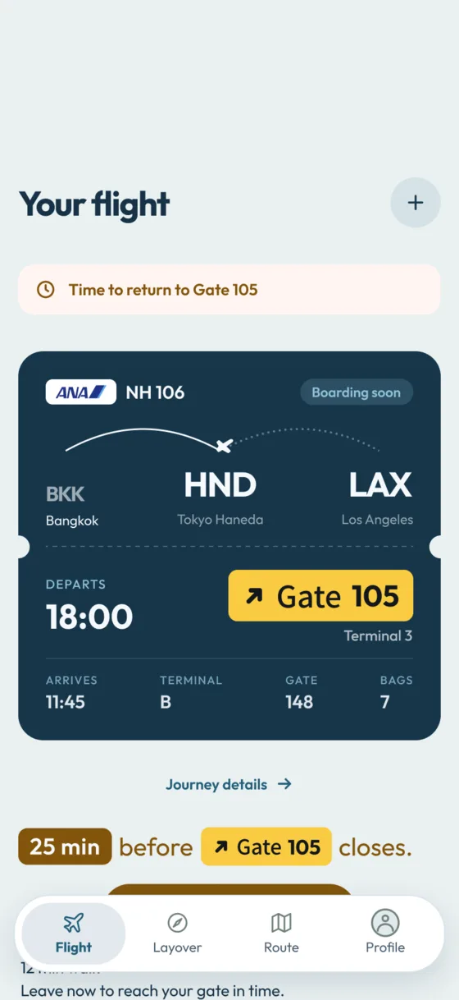
1 25 minutes left: a nudge to head back.
2 15 left, 12 to walk: the screen turns red.
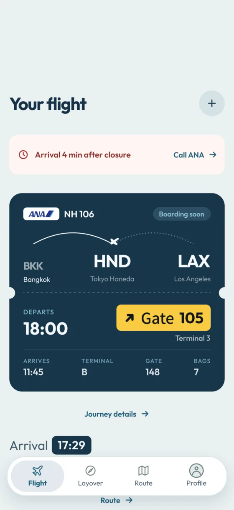
3 You'd arrive 4 minutes late. The app says so and points to the airline, not to a countdown you can't meet.
Landing at Haneda, leaving from Narita. The transfer is part of the journey, with its own time and cost.
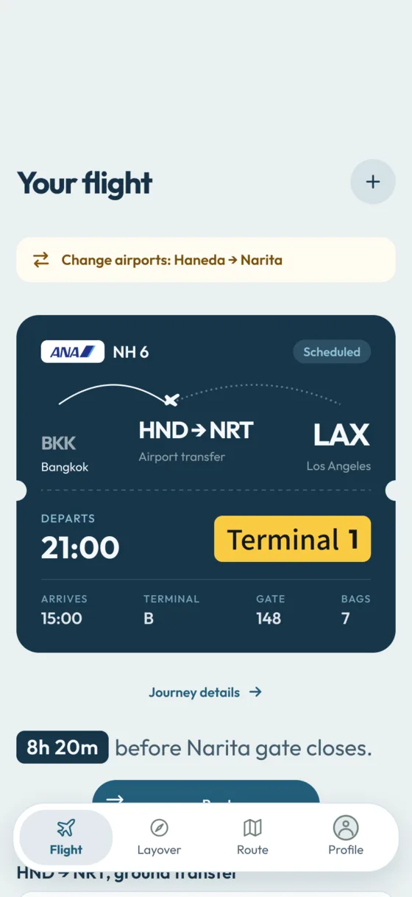
1 The countdown targets the Narita gate; a banner flags the change.
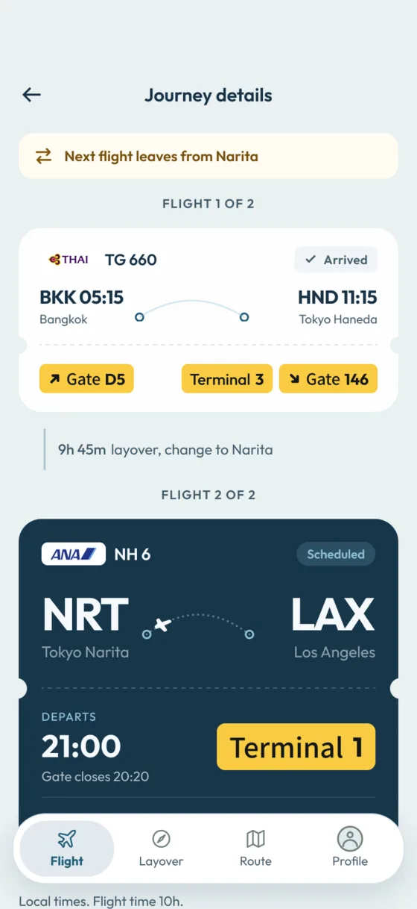
2 The transfer sits between the two flights.
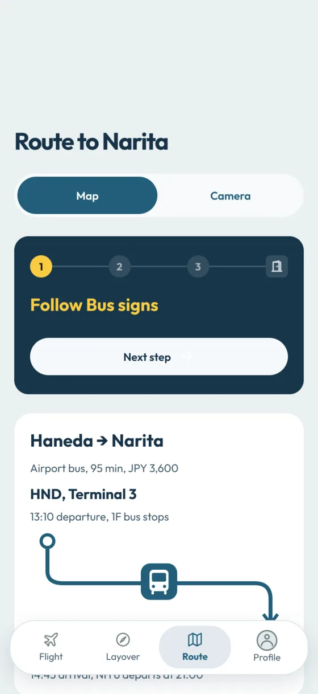
3 The bus shows time, price and departure: 95 min, ¥3,600, 13:10.
A layover app gets used at the worst moments, so we designed those states instead of leaving them as errors.
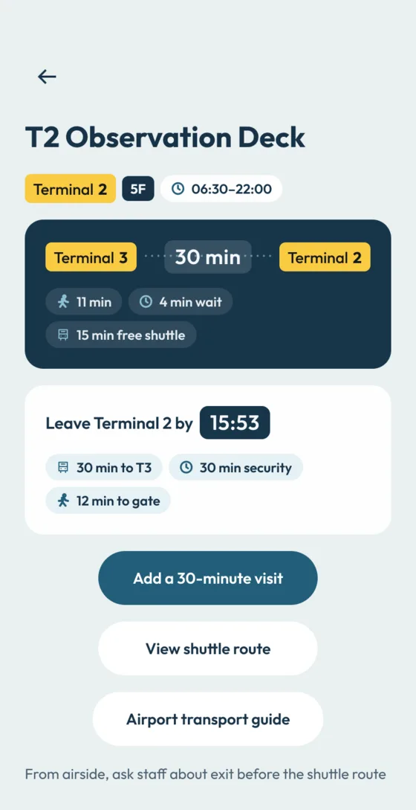
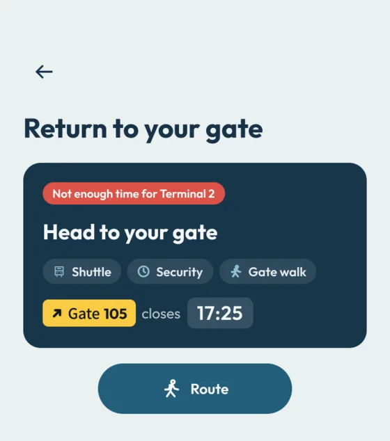
A trip to another terminal shows its full cost up front: the shuttle there and back, security again and the walk to the gate, adding up to “leave Terminal 2 by 15:53.” Out of time, the return screen says so: not enough time for Terminal 2.
It also tells you to ask staff before leaving the airside area.
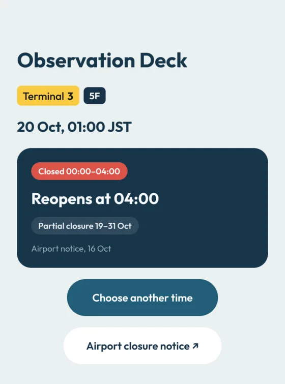
Shows when it reopens, the dated airport notice it came from, and a way to pick another time.
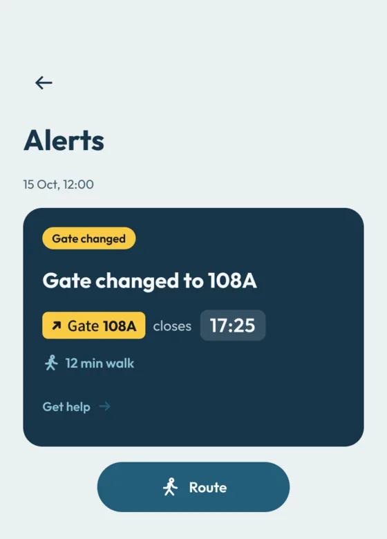
Every change also lands in Alerts with its time, the new deadline and the walk.
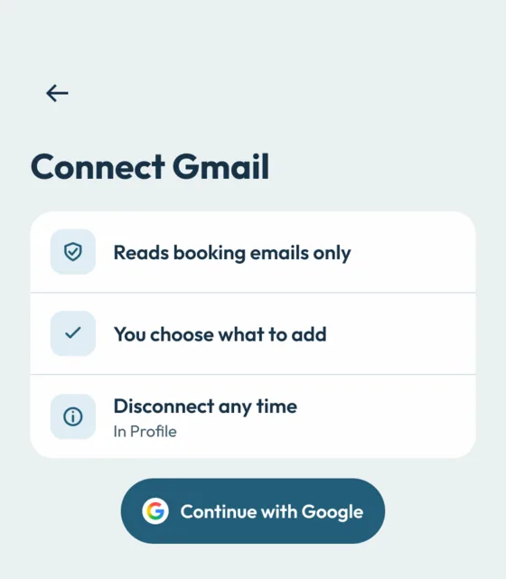
From a PDF, Apple or Google Wallet, Gmail, Google Calendar or by hand. Connecting an account says what it reads first, and you can disconnect later.
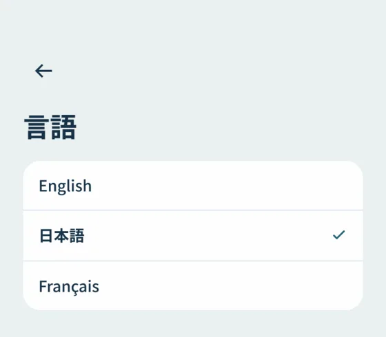
English, Japanese and French. A step-free routes switch for anyone avoiding stairs. Warnings never rely on color alone; each has words and numbers too.
Classmates walked through the prototype and wrote 14 critiques in the hamburger format: a strength, an improvement, another strength. We haven't acted on them yet.
Three reviewers asked for routes and transfers that already existed, and two couldn't find or check their plan. The features were there; they weren't visible enough.